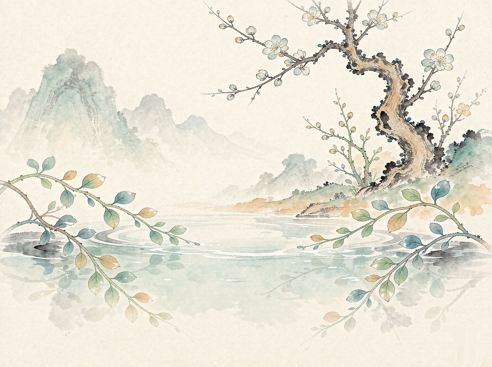
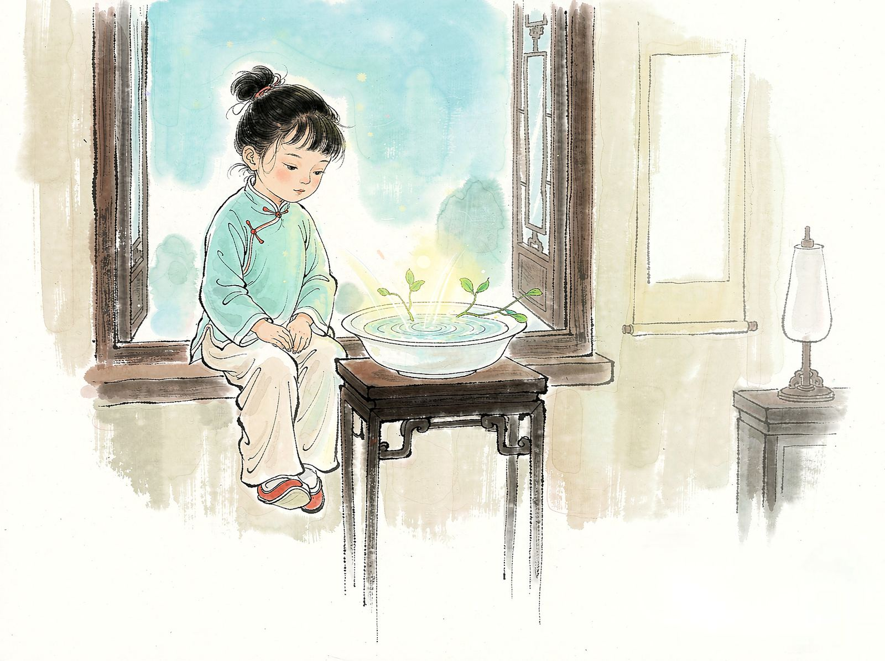

前面我们认识了心里的四种感受：喜、怒、哀、惧。
经文再补上三种：爱、恶、欲。
喜欢一样东西、亲近一个人，就是爱；心里厌烦、想要躲开，就是恶；心里想要得到、想要拥有，就是欲。
喜、怒、哀、惧、爱、恶、欲，合在一起，叫作七情，每个人心里都有。

有喜欢、有讨厌、有想要，都很正常。
但我们可以学着守住分寸：喜欢不贪着，厌烦不伤害，想要不妄求。

落到心上理解：七情如水面波纹。喜怒哀惧是波动；爱恶欲，是波纹生出的攀附——想要抓住悦境、推开厌境。
本心不是水面上的波浪，而是承载水波的水。波浪起灭不停，水体不曾增减。观照七情，就是看见爱恶欲的生起，知它是因缘所生的幻相，不跟着追逐、抗拒。
爱着则紧抓不放，恶则极力排斥，欲则不休追逐，把好恶当成自己；或反过来视七情为病根，强压杜绝，求一个无情。
知爱恶欲是分别之相，可觉察，不攀附，境变则相迁；七情本是人心之常，贵在知止，而不是枯木死灰一般断灭情觉。
一、勘俗见。这一句是向内观修的关键节点：上一课是「受」，这一课进入「想」与取。从单纯感受，转入分别、取舍、贪求，正是烦恼发起的关口。
二、现代对照。引导孩子区分「我喜欢」和「我一定要得到」；区分「我不喜欢」和「我可以伤害它」。让孩子看见：好恶是感受，行动要有边界。
三、承接常变主线。触发爱恶欲的对象千差万别（可变之相），遇境而起分别、生求取之心的规律不变（常）。
四、承接教与学二分。家长示范如何克制贪欲、包容不喜，属施教一侧；孩子慢慢在好恶面前学会自持，是自主修习。
接上选择力练习：七情本具，不除情，不随情。
爱，悦而亲附；恶，厌而疏拒；欲，希求执取。具，完备、本自具足。
全句释义：于喜怒哀惧四受之上，复生爱、恶、欲三类分别攀缘之心，七情于此完备。经文由色入受，由受入想，层层剥开五蕴的内在结构。
二 · 命题考辨（一）受与想的分界。喜怒哀惧，偏向被动的觉受；爱恶欲，是在觉受之后，第六意识发起的分别取舍。见悦境，先有喜的感受，继而升起爱，再进一步生出占有之欲；见厌境，先有不悦，继而生恶，想要远离、排斥。这就是十二因缘「触→受→爱→取」的链条，经文以极简的方式呈现。
（二）对照当下现代语境。现代心理学讲偏好、厌恶、动机与欲望。很多人的内耗，根源就在爱恶欲：执着于留住喜爱的一切，抗拒所有不顺心，不断向外抓取满足。修行不是变成没有好恶的麻木之人，而是可以感知喜爱与厌烦，但不被这份好恶绑架，不形成坚固的抓取与排斥。
（三）般若范式互参。七情属于五蕴之中的受、想二蕴。联动三才五蕴太极空杯模型：虚空自性为本，根尘接触为外缘，七情波动与分别取舍是缘起显现；七情在自性中生灭来去，自性不受染污。
（四）延伸义理。《金刚经》「应无所住而生其心」，落实在此处：可以有情、有感知，但不住于爱相、不住于恶相、不住于欲相。天台止观观烦恼源头，即是观爱取，知爱恶欲如幻即是修观。《坛经》讲无念，不是没有念头感受，是于念而无念，与此处同旨。
呼应「本乎数」：七为火之成数（河图「地二生火，天七成之」），以七统摄七情，是归类取象的方便，不是说心念只有这七种形态，心念变化无量，以此七类总摄。
三 · 跨典互参《道德经》「不见可欲，使民心不乱」（第三章）——不是消灭可欲之物，是不令欲心攀执。
《庄子·马蹄》「同乎无欲，是谓素朴」——「同乎好恶」出自《韩非子·奸劫弑臣》，非庄子语。至人不是没有好恶，是欲不黏着，故素朴而性得。
串联前文：自天地万物、六谷六畜一路外游，到此完全收摄向内，拆解人心的情与取，由见闻之学，转入心性内观的实修次第。
四 · 与前后课的张力呼应「人不学，不知义」：义即是明了爱恶欲是缘起之取，知取舍的边界。
呼应「玉不琢，不成器」：打磨自心，就在每一次喜爱、厌烦、渴求升起之时，练习觉察。
呼应「教之道，贵以专」：见闻之学转入内观，读懂自心七情，是心性修持的起点。
次第链条继续延伸：…… → 前两课 → 本课
一、慈悲之爱，和七情里的爱，分界在哪里？如何区分染爱与慈悲？
二、无欲，是不再有求取之心，还是仅仅不执着于所得？
三、七情本具，是否即是说自性本自带有烦恼种子？